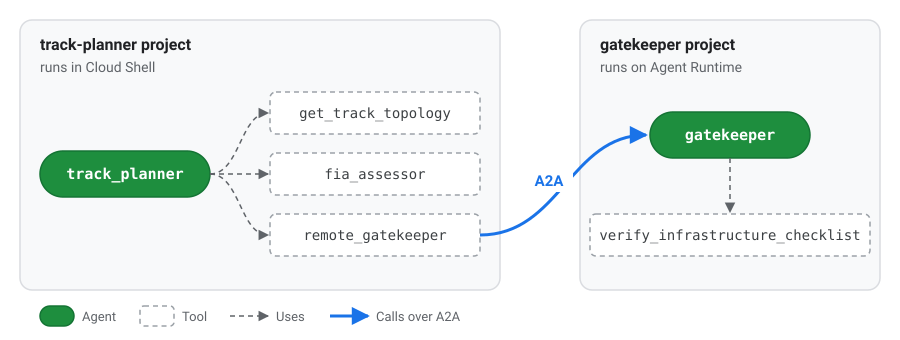

1. Overview
In this codelab you build a multi-agent system that designs a Formula E street circuit and gets it approved against a simplified set of FIA rules.
You will use agents-cli to generate two standard Agent Development Kit (ADK) projects, then write the parts that matter: an Agent Skill, three agents, and an evaluation. Everything else (project layout, server, dependencies, deployment config) comes from the CLI.
New to Formula E?
You don't need to know motorsport. These five terms are enough:
- Formula E: the FIA's all-electric racing championship. Most races are on temporary street circuits in city centres.
- Homologation: the FIA's official approval that a circuit is safe to race on. No homologation, no race.
- Regenerative braking: when the car brakes, its motors recharge the battery. Harder braking recovers more energy, so this codelab's rules ask for at least one heavy braking zone.
- CAD layers: named layers in the circuit's design drawings, such as the racing line, the pit lane and the barriers. The FIA checks that the mandatory ones are there.
- Attack Mode: drivers get a temporary power boost by driving through an activation zone placed off the racing line.
Your agents play both sides: one designs the circuit, and two check it for the FIA.
What you will build

Green boxes are agents and dashed boxes are their tools, the same way the ADK playground draws them. Two of the tools wrap other agents: fia<em>assessor is the FIA Assessor agent with the FIA compliance skill, and remote</em>gatekeeper calls the Gatekeeper agent in the other project over A2A.
| Agent | Project | Job | thinking_level |
|---|---|---|---|
| Lead Architect |
track-planner | Reads the venue, asks the Assessor, fixes problems, asks the Gatekeeper for approval | HIGH | | FIA Assessor | track-planner | Checks the layout using the FIA skill and a scoring tool | MEDIUM | | Digital Twin Gatekeeper | gatekeeper | Runs the final homologation checklist | LOW |
What you will learn
- How
agents-cli scaffold createlays out an ADK project, and which files you edit. - How to package domain knowledge as an Agent Skill (
SKILL.md,references/,scripts/) and load it with ADK'sSkillToolset. - How to match
thinking_levelto each agent's job. - How to evaluate agents with
agents-cli eval run. - How to deploy an agent to Agent Runtime, how Agent Identity differs from a service account, and how to call the deployed agent over the A2A protocol.
2. Set up your environment
Before you begin
You need a Google Cloud project with billing enabled. If you're following this codelab at an event, use the account and project you were given.
Open Cloud Shell and set your project
Open Cloud Shell, then run:
# Cloud Shell sometimes opens without a project set. If so, this sets it to
# the first project on your account.
if [ -z "$(gcloud config get-value project 2>/dev/null)" ]; then
gcloud config set project "$(gcloud projects list --format='value(projectId)' --limit=1)"
fi
export GOOGLE_CLOUD_PROJECT="$(gcloud config get-value project)"
export REGION="us-central1"
export ASSETS="$HOME/devrel-demos/codelabs/formula-e-track-planner"
echo "Project: $GOOGLE_CLOUD_PROJECT Region: $REGION"Create credentials for your agents
gcloud is already signed in, but the Python code your agents run uses Application Default Credentials (ADC), which need a separate sign-in:
gcloud auth application-default loginOpen the link it prints, sign in with the same account, copy the code, and paste it back into Cloud Shell. Then set the project that quota is billed to:
gcloud auth application-default set-quota-project "$GOOGLE_CLOUD_PROJECT"Enable the APIs
gcloud services enable \
aiplatform.googleapis.com \
cloudbuild.googleapis.com \
artifactregistry.googleapis.com \
storage.googleapis.com \
cloudresourcemanager.googleapis.com \
serviceusage.googleapis.com \
compute.googleapis.com \
iam.googleapis.com \
logging.googleapis.com \
cloudtrace.googleapis.comWhat each API is for:
| APIs | Used for |
|---|---|
| aiplatform |
Gemini models and Agent Runtime | | cloudresourcemanager, serviceusage, iam | The project and permission checks that gcloud and agents-cli deploy run | | compute | Creates the Compute Engine default service account that the deploy in Step 7 uses | | storage, logging, cloudtrace | Storage, logs and traces, as the Agent Runtime setup guide recommends | | cloudbuild, artifactregistry | Container builds and images, included as a precaution for the deploy in Step 7 |
Many projects already have some of these turned on. Enabling an API that's already on changes nothing.
Install uv and agents-cli
curl -LsSf https://astral.sh/uv/install.sh | sh
export PATH="$HOME/.local/bin:$PATH"
uv tool install google-agents-cli==1.10.0
agents-cli --versionThis codelab was tested with agents-cli 1.10.0, so install that version to get the same generated files.
3. Scaffold the projects and add the assets
Generate both projects
agents-cli scaffold create generates a complete, deployable ADK project. Run it twice, once for each agent system.
First, the track planner:
cd ~
agents-cli scaffold create track-planner \
--agent adk \
--deployment-target agent_runtime \
--region "$REGION" \
--prototype \
--yesThen the gatekeeper:
cd ~
agents-cli scaffold create gatekeeper \
--agent adk \
--deployment-target agent_runtime \
--region "$REGION" \
--prototype \
--yes| Flag | Meaning |
|---|---|
| --agent adk |
Start from the Python ADK template | | --deployment-target agent_runtime | Generate the server and config for Agent Runtime | | --prototype | Skip CI/CD; keep the project minimal | | --yes | Accept the defaults without prompting |
Explore the layout
The generated project looks like this. You only edit the files marked ✍️:
track-planner/
├── agents-cli-manifest.yaml # Records the template, deployment target and root agent name
├── pyproject.toml # Dependencies (google-adk, a2a-sdk, ...)
├── .env # Your project and model location, filled in for you
├── Dockerfile # Used by `agents-cli deploy`; copies app/ into the image
├── app/
│ ├── agent.py # ✍️ Your agents
│ ├── fast_api_app.py # Generated server: ADK API, A2A routes, Agent Runtime routes
│ └── app_utils/ # Generated helpers (A2A, sessions)
└── tests/
├── unit/ # Fast tests with no model calls
├── integration/ # Generated server tests
└── eval/ # ✍️ eval_config.yaml and datasets for `agents-cli eval`For a description of every generated file, see Project structure in the Agents CLI guide.
Try the generated agent
Before changing anything, run the template agent to see what the scaffold gives you. Install the dependencies and start the local playground on port 8080:
cd ~/track-planner
agents-cli install
agents-cli playground --port 8080To open it, click the Web Preview button in the Cloud Shell toolbar (the eye icon at the top right), then select Preview on port 8080.
In the playground, ask the template agent a question its tools can answer, for example:
What's the weather in San Francisco?The side panel shows each event, including the get_weather tool call and its result. You will use the same view later to follow your own agents.
When you've finished, go back to the terminal and press Ctrl+C to stop the playground.
Add the Formula E assets
The venue data, FIA rules, physics script, tools and eval datasets are not the lesson, so you copy them from GitHub rather than typing them:
cd ~
git clone --depth 1 --filter=blob:none --sparse \
--branch formula-e-lab-v1 \
https://github.com/tdsymonds/devrel-demos.git
git -C devrel-demos sparse-checkout set codelabs/formula-e-track-planner
cp -r "$ASSETS/track-planner/." ~/track-planner/
cp -r "$ASSETS/gatekeeper/." ~/gatekeeper/formula-e-lab-v1 is a fixed release tag, so everyone gets the same files. $ASSETS was set in Step 2 and points at the folder you just cloned.
This adds these files:
track-planner/
├── app/
│ ├── tools.py # get_track_topology, evaluate_track_layout
│ ├── auth.py # A2A client with per-request token refresh
│ ├── data/circuits.json # Five candidate venues
│ └── skills/fia-compliance-skill/
│ ├── references/track_regulations.md # The FIA rules
│ └── scripts/calculate_regen_zones.py # Braking-energy calculator
└── tests/
├── unit/test_tools.py
└── eval/datasets/track_eval.json, track_eval_quick.json
gatekeeper/
├── app/tools.py # verify_infrastructure_checklist
└── tests/unit/test_tools.pyInstall and test
(cd ~/track-planner && agents-cli install && uv run pytest tests/unit)
(cd ~/gatekeeper && agents-cli install && uv run pytest tests/unit)agents-cli install runs uv sync to create a virtual environment for each project. All unit tests should pass.
4. Write the FIA compliance skill
An Agent Skill packages instructions, reference documents and scripts in one folder. ADK's SkillToolset loads it in three levels, so the agent only reads what it needs:
| Level | File | When the agent sees it |
|---|---|---|
| 1 |
SKILL.md front matter (name, description) | Always (a few dozen tokens) | | 2 | SKILL.md body | When it calls loadskill | | 3 | references/, scripts/ | When it calls loadskillresource or runskill_script |
The skill lives in app/skills/ because the generated Dockerfile only copies app/ into the deployed image.
Look at the level 3 files
You copied the skill's level 3 files in Step 3:
references/track_regulations.mdholds the rules the Assessor checks: length and width limits, which barrier each braking zone needs, the mandatory CAD layers (plus medical layers for hospital routes), the regeneration target and the Attack Mode rules.scripts/calculate<em>regen</em>zones.pyis a calculator. Given a braking zone's entry speed, exit speed and braking distance, it works out the energy recovered and the barrier the corner needs, so the agent never has to guess the physics.
Run the script for London's Turn 10, where cars brake from 215 to 55 kph over 82 metres:
cd ~/track-planner
uv run python app/skills/fia-compliance-skill/scripts/calculate_regen_zones.py \
--entry-kph 215 --exit-kph 55 --brake-dist-m 82The car recovers about 508 kW here, above the 250 kW target. It slows at more than 2G, so the corner needs Tecpro barriers (F1_TEC3):
{"entry_kph": 215.0, "exit_kph": 55.0, "brake_dist_m": 82.0, "deceleration_g": 2.07, "estimated_regen_kw": 507.7, "meets_250kw_target": true, "required_barrier_layer": "F1_TEC3"}Write SKILL.md
Create the file that ties the skill together:
cloudshell edit app/skills/fia-compliance-skill/SKILL.mdAdd this content:
---
name: fia-compliance-skill
description: >
FIA Formula E street circuit rules: length and width limits, mandatory CAD
layers, barrier selection, and Gen3 regenerative braking estimates. Use when
designing, checking or fixing a Formula E circuit layout.
---
# FIA Formula E Compliance
Follow these steps for every circuit you check.
1. **Read the rules.** Call `load_skill_resource` with
`file_path="references/track_regulations.md"`.
2. **Estimate regeneration for every heavy braking zone.** Call
`run_skill_script` with `file_path="scripts/calculate_regen_zones.py"` and
`args={"entry-kph": <entry>, "exit-kph": <exit>, "brake-dist-m": <distance>}`.
Never guess kW values. Use the highest `estimated_regen_kw` as the
circuit's peak regeneration.
3. **Check barriers.** Any zone whose `required_barrier_layer` is `F1_TEC3`
needs the `F1_TEC3` CAD layer.
4. **Report.** List every rule the layout fails and a concrete fix for each
one.The description is what the model reads to decide when to use the skill, so it says both what the skill covers and when to use it.
See how the skill is wired
Open app/tools.py in the Cloud Shell Editor:
cloudshell edit app/tools.pyFind the build<em>fia</em>skill_toolset function:
def build_fia_skill_toolset() -> SkillToolset:
return SkillToolset(
skills=[load_skill_from_dir(SKILL_DIR)],
code_executor=UnsafeLocalCodeExecutor(),
)load<em>skill</em>from_dirreads the skill folder:SKILL.md,references/andscripts/.SkillToolsetturns it into tools the agent can call:list<em>skills,load</em>skill,load<em>skill</em>resourceandrun<em>skill</em>script.UnsafeLocalCodeExecutorletsrun<em>skill</em>scriptrun the Python script on this machine. It is fine for a lab; use a sandboxed executor in production.
You will attach this toolset to the Assessor in the next step.
5. Write the agents
Gemini 3 models control reasoning with thinking</em>level (LOW, MEDIUM or HIGH) instead of a token budget. In ADK you set it with types.ThinkingConfig(thinking_level=types.ThinkingLevel.HIGH). Match it to each agent's job: more thinking means better planning but more latency and cost.
The Gatekeeper (LOW)
The Gatekeeper only runs a deterministic checklist, so it needs little reasoning. Replace the template agent:
cloudshell edit ~/gatekeeper/app/agent.py"""FIA Digital Twin Gatekeeper agent.
This agent runs in its own project and is deployed to Agent Runtime. The track
planner calls it over the A2A protocol.
"""
from google.adk.agents import Agent
from google.adk.apps import App
from google.adk.models import Gemini
from google.genai import types
from app.tools import verify_infrastructure_checklist
# Tested with Gemini 3.8 Flash. To try Gemini 4 Argon, change this to
# "gemini-4-argon", delete the `temperature` settings below (Argon ignores
# them) and run `uv add "google-genai>=2.30.1"` in this project first.
MODEL = "gemini-3.8-flash"
root_agent = Agent(
# Must match `root_agent_name` in agents-cli-manifest.yaml.
name="gatekeeper",
model=Gemini(
model=MODEL,
retry_options=types.HttpRetryOptions(attempts=3),
),
description=(
"FIA Digital Twin Gatekeeper. Runs the final homologation checklist "
"for a Formula E circuit blueprint."
),
instruction=(
"You are the FIA Digital Twin Gatekeeper. For every circuit blueprint "
"you receive, call `verify_infrastructure_checklist` with its circuit "
"ID, CAD layers, minimum width and peak regeneration. Reply with the "
"status and any missing CAD layers. Never approve a blueprint the "
"checklist rejects."
),
# A deterministic checklist needs little reasoning: keep it fast and cheap.
generate_content_config=types.GenerateContentConfig(
temperature=0.0,
thinking_config=types.ThinkingConfig(
thinking_level=types.ThinkingLevel.LOW,
),
),
tools=[verify_infrastructure_checklist],
)
app = App(
root_agent=root_agent,
name="app",
)Run the Gatekeeper locally
Open a second Cloud Shell tab and start the Gatekeeper's generated server on port 8001:
cd ~/gatekeeper
APP_URL=http://localhost:8001 uv run uvicorn app.fast_api_app:app --port 8001Back in the first tab, look at the Gatekeeper's A2A agent card. This is how other agents discover what the Gatekeeper is and what it can do:
curl -s http://localhost:8001/a2a/app/.well-known/agent-card.json | jq .You should see JSON like this (shortened):
{
"name": "gatekeeper",
"description": "FIA Digital Twin Gatekeeper. Runs the final homologation checklist for a Formula E circuit blueprint.",
"supportedInterfaces": [
{"url": "http://localhost:8001/a2a/app", "protocolBinding": "JSONRPC", "protocolVersion": "1.0"}
],
"skills": [
{"id": "gatekeeper", "name": "model", "description": "FIA Digital Twin Gatekeeper. ..."},
{"id": "gatekeeper-verify_infrastructure_checklist", "name": "verify_infrastructure_checklist", "description": "Runs the final homologation checklist ..."}
]
}nameanddescriptioncome straight from yourAgent(...)definition.skillslists what the agent can do. ADK addedverify<em>infrastructure</em>checklistautomatically, using the tool's docstring.supportedInterfacestells callers where to send A2A requests. That's why you started the server withAPP_URL=http://localhost:8001: a caller reads the card first, then sends its requests to whateverurlthe card advertises.
Nothing here was written by hand: the scaffolded server builds the card from your agent. The track planner will read this card to find and call the Gatekeeper.
The Assessor (MEDIUM) and the Lead Architect (HIGH)
The track planner has two agents:
- The Assessor weighs several rules, so it gets
MEDIUM. It is wrapped in anAgentTool, so the Lead Architect calls it like a function and gets the verdict back. - The Lead Architect plans, fixes and coordinates, so it gets
HIGH. It reaches the Gatekeeper through aRemoteA2aAgent, created bycreate<em>remote</em>gatekeeper_agent()inapp/auth.py, and also wraps it in anAgentTool.
Why wrap both helpers as tools? An AgentTool returns its answer to the caller, so the Lead Architect stays in charge and writes the final blueprint. If the Gatekeeper were a sub_agent instead, the Lead Architect would hand the conversation over to it, and the Gatekeeper's short status would become the final answer.
Open the track planner's app/agent.py file:
cloudshell edit ~/track-planner/app/agent.pyCopy the following code and replace the entire contents of ~/track-planner/app/agent.py with it:
"""Formula E track planner: Lead Architect, FIA Assessor and remote Gatekeeper.
- The Lead Architect (root agent) designs the circuit and stays in charge.
- The FIA Assessor checks the layout and is called as a tool (`AgentTool`).
- The Gatekeeper runs in a separate project. It is also called as a tool, over
A2A, so its verdict comes back to the Lead Architect.
"""
from google.adk.agents import Agent
from google.adk.apps import App
from google.adk.models import Gemini
from google.adk.tools.agent_tool import AgentTool
from google.genai import types
from app.auth import create_remote_gatekeeper_agent
from app.tools import build_fia_skill_toolset
from app.tools import evaluate_track_layout
from app.tools import get_track_topology
# Tested with Gemini 3.8 Flash. To try Gemini 4 Argon, change this to
# "gemini-4-argon", delete the `temperature` settings below (Argon ignores
# them) and run `uv add "google-genai>=2.30.1"` in this project first.
MODEL = "gemini-3.8-flash"
fia_skill_toolset = build_fia_skill_toolset()
# 1. FIA Assessor: MEDIUM thinking to weigh several rules without much latency.
assessor_agent = Agent(
name="fia_assessor",
model=Gemini(
model=MODEL,
retry_options=types.HttpRetryOptions(attempts=3),
),
description=(
"FIA safety and energy assessor. Audits a proposed circuit against "
"the geometry, regeneration and CAD layer rules."
),
instruction=(
"You are the FIA Assessor. Load the `fia-compliance-skill` and follow "
"it. Estimate regeneration for each braking zone with "
"`calculate_regen_zones.py`, then call `evaluate_track_layout` with "
"the highest value. Reply with the verdict, the score and every "
"remediation note."
),
generate_content_config=types.GenerateContentConfig(
temperature=0.1,
thinking_config=types.ThinkingConfig(
thinking_level=types.ThinkingLevel.MEDIUM,
),
),
tools=[fia_skill_toolset, evaluate_track_layout],
)
# 2. Remote Gatekeeper, reached over A2A (see app/auth.py).
remote_gatekeeper = create_remote_gatekeeper_agent()
# 3. Lead Architect: HIGH thinking for multi-step planning and trade-offs.
root_agent = Agent(
# Must match `root_agent_name` in agents-cli-manifest.yaml.
name="track_planner",
model=Gemini(
model=MODEL,
retry_options=types.HttpRetryOptions(attempts=3),
),
description=(
"Lead Formula E circuit architect. Designs FIA-compliant street "
"circuits and gets them homologated."
),
instruction=(
"You are the Lead Formula E Circuit Architect. For every request:\n"
"1. Call `get_track_topology` for the venue.\n"
"2. Call the `fia_assessor` tool with the full topology.\n"
"3. If the Assessor rejects the layout, propose concrete fixes (for "
"example widen a sector to 10.0m or add missing CAD layers) and "
"re-assess the fixed layout.\n"
"4. Once the Assessor passes it, call the `remote_gatekeeper` tool "
"with the circuit ID, CAD layers, minimum width and peak "
"regeneration for final approval.\n"
"5. Finish with a short blueprint: circuit ID, length, minimum width, "
"peak regeneration, every CAD layer by name, and the Gatekeeper's "
"status."
),
generate_content_config=types.GenerateContentConfig(
temperature=0.2,
thinking_config=types.ThinkingConfig(
thinking_level=types.ThinkingLevel.HIGH,
),
),
# Both helpers are tools, so their answers come back to the Lead Architect
# and it writes the final blueprint.
tools=[
get_track_topology,
AgentTool(agent=assessor_agent),
AgentTool(agent=remote_gatekeeper),
],
)
app = App(
root_agent=root_agent,
name="app",
)Run the whole system in the playground
Make sure the Gatekeeper is still running in your second tab. In the first tab, start the track planner's playground:
cd ~/track-planner
agents-cli playground --port 8080Click Web Preview > Preview on port 8080, as you did in Step 3.
Ask for a circuit at a venue that meets the rules:
Design and homologate a Formula E circuit at Tokyo Bay.Watch the events panel as the agents work. You should see, in order:
get<em>track</em>topology: the Lead Architect loads the Tokyo Bay data.fia<em>assessor: the Lead Architect hands the layout to the Assessor, which callsload</em>skill,load<em>skill</em>resourceandrun<em>skill</em>script(once per braking zone), thenevaluate<em>track</em>layout.remote_gatekeeper: the Lead Architect calls the Gatekeeper over A2A. You will see the request logged in your second tab.- A final blueprint from the Lead Architect, listing every CAD layer and the Gatekeeper's APPROVED status.
Click any event to see its exact inputs and outputs.
Now start a new session and try a venue that breaks the rules:
Can the Monaco Harbour layout be homologated? If not, fix it and try again.This time the Assessor rejects the 6.8m chicane, the Lead Architect proposes a wider one, and the fixed layout goes back to the Assessor before reaching the Gatekeeper.
When you've finished, press Ctrl+C in the first tab to stop the playground. Leave the Gatekeeper running in the second tab: you need it in the next step.
6. Evaluate the agents
agents-cli eval run runs your agent over a dataset, records every turn and tool call, and grades the results. You decide what to measure in tests/eval/eval_config.yaml.
Look at the dataset
Open the dataset in the Cloud Shell Editor:
cd ~/track-planner
cloudshell edit tests/eval/datasets/track_eval.jsonThe file holds a list of eval<em>cases. Each case has an eval</em>case_id, a prompt (what the user asks), and a reference (what a good answer looks like). The LLM judge compares the agent's answer with the reference.
| evalcaseid | What it tests |
|---|---|
| fe001tokyo_compliant |
A venue that passes every rule and gets approved | | fe002monaconarrow | The 6.8m chicane fails the width rule | | fe003berlintoolong | The 4350m circuit fails the length rule | | fe004missinglayers | A layout missing mandatory CAD layers | | fe005lowregen | A braking zone below the 250 kW target | | fe006saopaulomedical | Hospital access needing medical CAD layers | | fe007attackmode | An Attack Mode zone on the racing line | | fe008multiturn_remediation | A multi-turn conversation: Monaco is rejected, the user asks for a fix, and the fixed layout should be approved |
The last case uses agent_data instead of prompt. It replays the earlier turns of a conversation, so you can test how the agent handles a follow-up request, not just a single question.
track<em>eval</em>quick.json in the same folder holds just two cases: case 1 (a single question) and case 8 (a conversation). You will run that one because it's faster and uses less quota.
Write the metrics
The dataset says what to ask the agent. eval_config.yaml says how to score the answers. agents-cli eval run reads it after the agent has answered every case, and runs each metric on each answer.
Open the file the scaffold generated:
cloudshell edit tests/eval/eval_config.yamlIt already contains a generic LLM judge (custom<em>response</em>quality) and a agent<em>turn</em>count metric that only counts turns. That's a fine start for any agent, but it says nothing about Formula E. You will keep the judge and add a metric that checks a rule specific to this domain.
Good evaluations usually mix two kinds of metric:
| Kind | How it scores | Good for | Trade-off |
|---|---|---|---|
| LLM-as-a-judge |
A model reads the answer and the case's reference, then gives a 1 to 5 score with an explanation | Fuzzy qualities: is the answer correct, complete and clear? | Costs a model call per case; scores can vary slightly between runs | | Code metric | A small Python function checks the answer | Exact, checkable facts: did the answer include something that must be there? | Only checks what you can express in code |
Replace the file's contents with:
metrics_to_run:
- custom_response_quality
- fia_cad_layer_compliance
custom_metrics:
# LLM-as-a-judge. response_quality.py is generated by `agents-cli scaffold
# create`; it grades the final answer against the case's `reference`.
- name: custom_response_quality
custom_function_file: response_quality.py
# Deterministic code metric: an approved blueprint must name every
# mandatory FIA CAD layer.
- name: fia_cad_layer_compliance
custom_function: |
def evaluate(instance):
response = str(instance.get("response") or "")
reference = str(instance.get("reference") or "")
# Only approvals must list every layer. Rejections and other
# questions (such as Attack Mode) don't, so skip them.
if "APPROVED" not in reference:
return {"score": 1.0, "explanation": "Not an approval case."}
required = [
"F1_TRACK_CENTRELINE",
"F1_PIT_ENTRY_SPEED_LIMIT_LANE",
"F1_WALL_TEMP",
"F1_TEC3",
]
missing = [layer for layer in required if layer not in response]
return {
"score": round(1 - len(missing) / len(required), 2),
"explanation": "Missing: " + (", ".join(missing) or "none"),
}What each part does:
metrics<em>to</em>runlists the metrics to run, by name. Removing a name here switches that metric off without deleting it.custom<em>response</em>qualityis the LLM judge.custom<em>function</em>filepoints attests/eval/response_quality.py, which the scaffold generated. Open it if you want to see the judging prompt.fia<em>cad</em>layer<em>complianceis your code metric, written inline undercustom</em>function. For each case it receives aninstance(the prompt, the agent's finalresponse, and thereference). For cases where the expected answer is an approval, it checks that the response names all four mandatory CAD layers and lists any that are missing. A blueprint that leaves outF1_TEC3, for example, scores 0.75. Other cases score 1.0, because a rejection or an Attack Mode answer doesn't need to list every layer.
Why check CAD layers? An approved blueprint that leaves out a mandatory layer is wrong even if it reads well, and an LLM judge can overlook that. A code check applies the same rule the same way on every run.
Run the evaluation
Keep the local Gatekeeper running in your second tab, then run:
agents-cli eval run \
--dataset tests/eval/datasets/track_eval_quick.json \
--config tests/eval/eval_config.yaml \
--concurrency 1
ls artifacts/grade_results/The evaluation takes a few minutes. Each case runs the whole multi-agent flow, about ten model calls with the Lead Architect on HIGH thinking, so Step 1/2: eval generate is the slow part. It isn't stuck.
When it finishes, open the HTML report in artifacts/grade<em>results/ with the Cloud Shell Editor. Low fia</em>cad<em>layer</em>compliance scores tell you the Lead Architect's final answer is leaving out layers. Try tightening its instruction and running the evaluation again.
7. Deploy the Gatekeeper to Agent Runtime
You only deploy the Gatekeeper. The track planner keeps running in Cloud Shell and calls it.
Open a new Cloud Shell tab
Deploying takes 5 to 8 minutes, so do it in a new tab while the evaluation from Step 6 finishes:
- Click Open a new tab (+) in the Cloud Shell toolbar.
- A new tab doesn't keep the variables from Step 2, so set them again:
export GOOGLE_CLOUD_PROJECT="$(gcloud config get-value project)"
export REGION="us-central1"
export ASSETS="$HOME/devrel-demos/codelabs/formula-e-track-planner"
export PATH="$HOME/.local/bin:$PATH"
echo "Project: $GOOGLE_CLOUD_PROJECT Region: $REGION"Leave the local Gatekeeper running in your second tab: the evaluation still uses it, and the deploy doesn't need it stopped.
Deploy
In the new tab, deploy the Gatekeeper. It runs as the project's Compute Engine default service account:
cd ~/gatekeeper
PROJECT_NUMBER=$(gcloud projects describe "$GOOGLE_CLOUD_PROJECT" --format="value(projectNumber)")
agents-cli deploy \
--no-agent-identity \
--service-account "${PROJECT_NUMBER}-compute@developer.gserviceaccount.com" \
--project "$GOOGLE_CLOUD_PROJECT" \
--region "$REGION" \
--no-confirm-projectDeployment takes about 5 to 8 minutes. Don't close the Cloud Shell tab while it runs. If the log stream disconnects, check progress with agents-cli deploy --status. While you wait, go back to Step 6 and read your evaluation report.
Inspect the agent's identity
agents-cli records the deployed resource in deployment_metadata.json:
export RUNTIME_ID=$(jq -r .remote_agent_runtime_id ~/gatekeeper/deployment_metadata.json)
echo "$RUNTIME_ID"
curl -s -H "Authorization: Bearer $(gcloud auth print-access-token)" \
"https://${REGION}-aiplatform.googleapis.com/v1beta1/${RUNTIME_ID}" \
| jq -r .spec.effectiveIdentityThe second line of output is the identity the Gatekeeper runs as:
| Deployed with | Example output |
|---|---|
| The service account (default) |
123456789012-compute@developer.gserviceaccount.com | | Agent Identity | agents.global.org-.system.id.goog/resources/aiplatform/projects//locations/us-central1/reasoningEngines/ |
The service account is shared by everything in the project that uses it. An Agent Identity belongs to this one agent, so you can grant it exactly the roles it needs and see its actions separately in audit logs.
8. Connect to the deployed Gatekeeper over A2A
Agent Runtime serves the Gatekeeper's generated A2A routes behind an authenticated /api path.
Make sure the evaluation from Step 6 has finished, then stop the local Gatekeeper in your second tab (Ctrl+C). From now on the track planner calls the deployed one. In your first tab, point the track planner at it:
export RUNTIME_ID=$(jq -r .remote_agent_runtime_id ~/gatekeeper/deployment_metadata.json)
: "${RUNTIME_ID:?No deployed Gatekeeper found. Complete Step 7 first.}"
cd ~/track-planner
echo "GATEKEEPER_A2A_URL=https://${REGION}-aiplatform.googleapis.com/reasoningEngines/v1/${RUNTIME_ID}/api/a2a/app" >> .envWhy the client refreshes its token
Open app/auth.py. Google Cloud access tokens expire after one hour, so a client that sets a fixed Authorization header at startup starts failing with 401 Unauthorized after an hour. GoogleAuthRefresh subclasses httpx.Auth and checks the credentials on every request, refreshing them when needed. create<em>remote</em>gatekeeper_agent() only attaches it for https:// URLs.
Run it end to end
Start the playground again so it picks up the new GATEKEEPER<em>A2A</em>URL:
agents-cli playground --port 8080Click Web Preview > Preview on port 8080, start a new session, and ask:
Assess the Monaco Harbour layout, widen the chicane to 11m, and get Gatekeeper approval.The events look the same as in Step 5, but the remote_gatekeeper call now goes to the Gatekeeper on Agent Runtime instead of your second tab.
See the call arrive on Agent Runtime
Prove the request really reached the deployed Gatekeeper over A2A:
- In the Cloud console, search for Agent Platform, then open Deployments in the left menu.
- Select gatekeeper.
- Open the Sessions tab.
You will see a new session whose User ID starts with A2A<em>USER</em>. The Gatekeeper's A2A server created it when your track planner called it. Open the Traces tab on the same page to see the Gatekeeper's model call and its verify<em>infrastructure</em>checklist tool call for that request.
Optional: deploy the track planner too
So far the track planner runs in Cloud Shell, so its A2A calls to the Gatekeeper use your credentials. Deploy the planner as well and both agents run on Agent Runtime, calling each other with their own deployed identities.
Press Ctrl+C to stop the playground, then deploy the planner the same way as the Gatekeeper:
cd ~/track-planner
PROJECT_NUMBER=$(gcloud projects describe "$GOOGLE_CLOUD_PROJECT" --format="value(projectNumber)")
agents-cli deploy \
--no-agent-identity \
--service-account "${PROJECT_NUMBER}-compute@developer.gserviceaccount.com" \
--project "$GOOGLE_CLOUD_PROJECT" \
--region "$REGION" \
--no-confirm-projectBoth agents run as the same Compute Engine service account. Keep --service-account: without it, the planner runs as Agent Runtime's default service agent and can't call the Gatekeeper (see Why this service account? in Step 7).
How the deployed planner reaches the Gatekeeper:
agents-cli deploycopies the values in.envinto the deployment, so the planner gets theGATEKEEPER<em>A2A</em>URLyou added above.- Inside Agent Runtime,
GoogleAuthRefreshinapp/auth.pypicks up the planner's deployed identity instead of yours.
Deployment takes about 5 to 8 minutes. When it finishes, check which identity the planner runs as:
export PLANNER_ID=$(jq -r .remote_agent_runtime_id deployment_metadata.json)
curl -s -H "Authorization: Bearer $(gcloud auth print-access-token)" \
"https://${REGION}-aiplatform.googleapis.com/v1beta1/${PLANNER_ID}" \
| jq -r .spec.effectiveIdentityTo try the deployed system:
- In the Cloud console, go back to Agent Platform > Deployments.
- Select track-planner and open the Playground tab.
- Enter:
Design and homologate a Formula E circuit at Tokyo Bay.- Wait for the blueprint with the Gatekeeper's APPROVED status.
- Go back to Deployments, select gatekeeper and open the Sessions tab. The newest
A2A<em>USER</em>session came from the deployed planner, not from Cloud Shell.
When you clean up in the next step, delete the planner as well:
curl -X DELETE -H "Authorization: Bearer $(gcloud auth print-access-token)" \
"https://${REGION}-aiplatform.googleapis.com/v1beta1/${PLANNER_ID}?force=true"9. Troubleshooting and clean up
Troubleshooting
| Symptom | Fix |
|---|---|
| UREQTOSNOT_ACCEPTED |
Accept the Terms of Service in the Cloud console, then retry. | | Project is (unset) | Re-run the project commands in Step 2. | | service account info is missing 'email' field | Run gcloud auth application-default login (Step 2), then restart any running servers. | | FileNotFoundError for SKILL.md | Complete Step 4, or copy $ASSETS/solution/track-planner/. into ~/track-planner/. | | Connection refused to localhost:8001 | Start the local Gatekeeper (Step 5), or set GATEKEEPERA2AURL to the deployed one (Step 8). | | Permission 'resourcemanager.projects.setIamPolicy' denied on deploy | Your account can't use Agent Identity. Follow the clean-up box in Step 7, then use the service account deploy. | | The deployed track planner reports 403 Forbidden from the Gatekeeper | The planner's identity isn't allowed to call the Gatekeeper. Redeploy it with --service-account as in Step 7, or with --agent-identity if you own the project. | | 429 RESOURCE_EXHAUSTED | You've hit the Gemini quota. Wait a minute, or add --concurrency 1 --qps 2 to agents-cli eval run. | | Address already in use | Stop the other server, or pick another --port. |
Clean up
Delete the deployed Gatekeeper so it doesn't keep running:
export RUNTIME_ID=$(jq -r .remote_agent_runtime_id ~/gatekeeper/deployment_metadata.json)
: "${RUNTIME_ID:?No deployed Gatekeeper found.}"
curl -X DELETE -H "Authorization: Bearer $(gcloud auth print-access-token)" \
"https://${REGION}-aiplatform.googleapis.com/v1beta1/${RUNTIME_ID}?force=true"If you created a project just for this codelab, you can delete the whole project instead. If you're at an event, keep the project you were given until the organisers say otherwise.
What you learned
agents-cli scaffold creategives you a standard, deployable ADK project; you only write agents, skills and evaluations.- Agent Skills keep domain knowledge out of prompts until the agent needs it.
thinking_levellets you trade reasoning depth for speed per agent.agents-cli eval runturns "does it work?" into scores you can track.- Agent Identity and A2A let independently deployed agents work together securely.